一些东西
- abstraction如同汽车，有blueprint,不会这个也可以开车
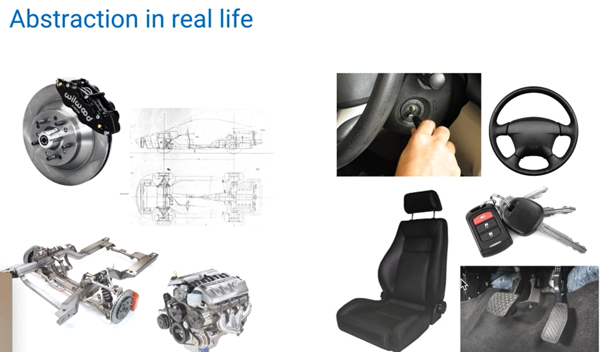
函数可以保留2/3的除法，python会直接得出实数，不保留numerator和denominator 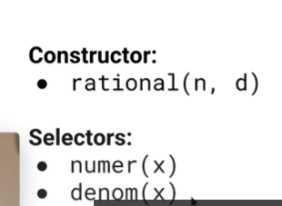
违反 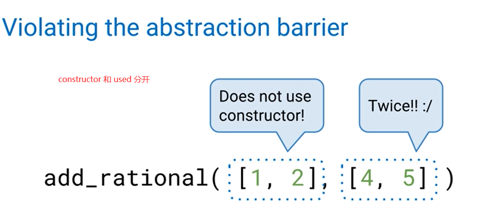 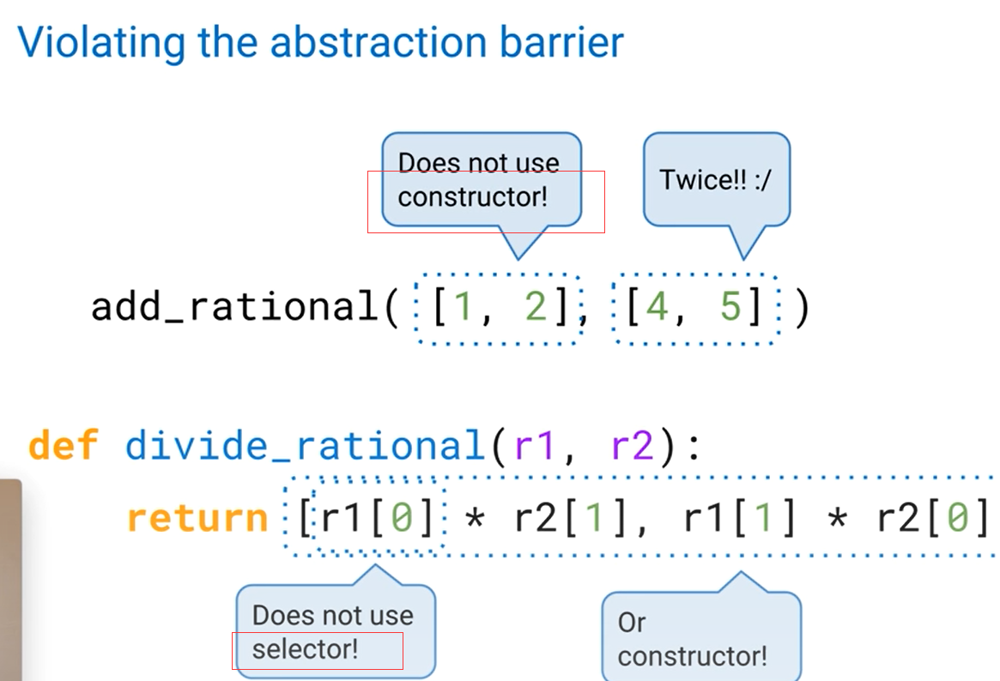正确例子
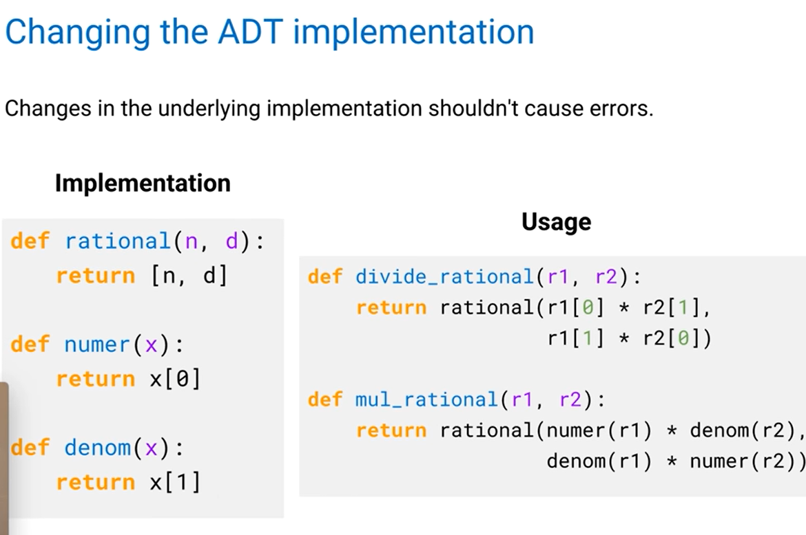 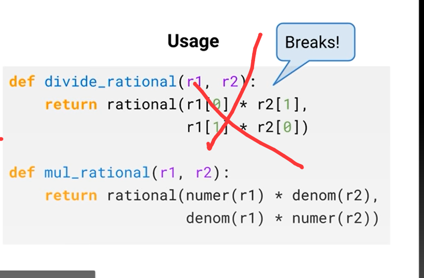简洁与否
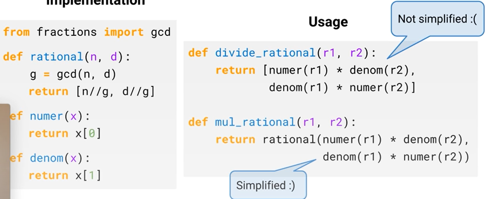
list and dict 可改,tuple and func 不可改
The process of changing an object's state is called mutation. Examples of mutable objects include lists and dictionaries. Examples of objects that are not mutable include tuples and functions- The only method here that has a return value is pop! All of the other methods return None.
- dict 无序；Dictionaries are unordered sets of key-value pairs. Keys can only be immutable types (e.g. strings, numbers, tuples) 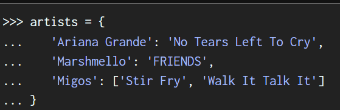 unlike lists, keys must be unique; that is, a key can appear only once in a dictionary. 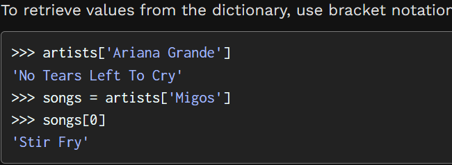 Notice:adding and for updating a key-value pair are identical 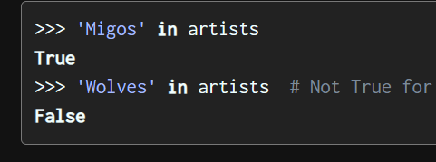
-
identity vs equality
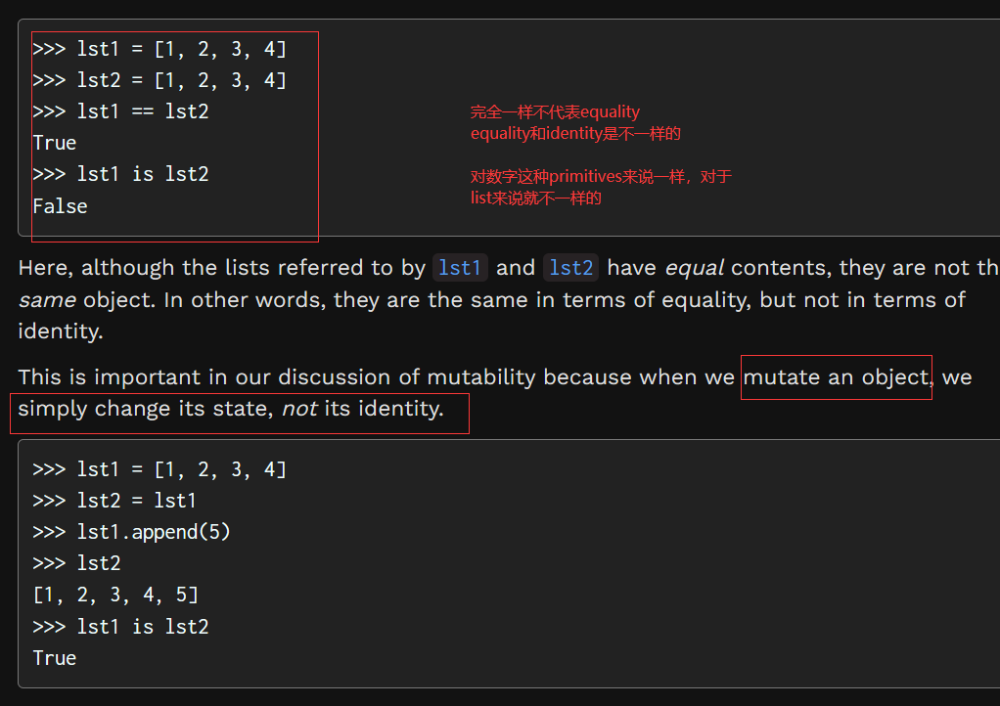 -
Data abstraction
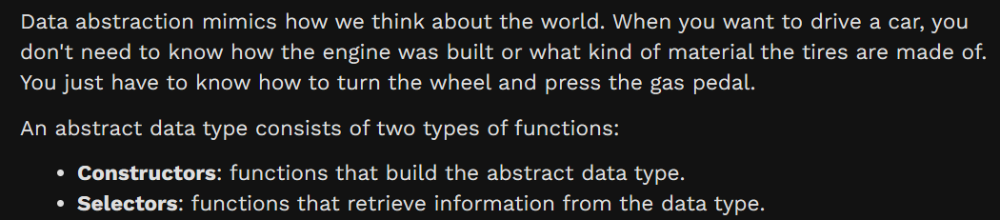 - 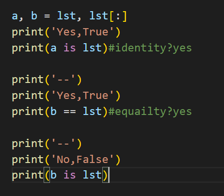 lst.remove(x) 这个x是value 不是index
- dict[key] == value